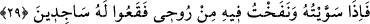
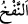

cemaline mazhar olduklarından) insanın ne mevki şerefine ne de kemâl rütbesine
sâhiptirler.
Hâfız der ki:
Melek bilmez ki aşk nedir, kıssa okuma
Kadeh iste ve Âdem’in toprağına gülsuyu dök
“Ben kupkuru bir çamurdan” ifâdesi, ‘yaratacağım’ kelimesine bağlı olabileceği
gibi insanın sıfatı da olabilir. O zaman mânâ: “şekillenmiş kara balçıktan” olan
kupkuru çamurdan “bir insan yaratacağım.” şeklinde olur.
el-Kâmûs’ta der ki: “Beşer, erkek olsun dişi olsun tekil olsun çoğul olsun insan
demektir. Tesniye ve ‘ebşâr’ şeklinde çoğulu da yapılır. İnsan tenine de ‘beşer’ denir.”
“Yaratacağım” ifâdesi, ileride kesin olarak yaratacağım demektir.
Allah Teâlâ, temiz olanla yâni melekle habis olanı yâni İblis’i birbirinden ayırmak
için imtihan eder bir tarzda meleklerle istişârede bulundu. Melek kurtuldu, İblis ise
helâk oldu. Bu yüzden şöyle söylenir: “Denendiği zaman insan ya ikram görür, ya da
horlanır.”
Denilir ki Allah Teâlâ, dünyânın fânî olduğu ve hükümranlıklarının biteceği fikrine
kendilerini alıştırsınlar diye meleklere Âdem (a.s.)’ı yaratmadan önce onu var
edeceğini bildirdi. Nitekim Âdem (a.s.)’a da kendini cennetten çıkacağı fikrine
alıştırması için: ‘Eşinle birlikte cennette otur.’ (el-Bakara 3/35) buyurdu.
Oturmak/sâkin olmak ise ancak âriyet (emânet) şeklinde olur.
Sâib şöyle der:
Fenâya hazır olanın alâkalar için korkusu yoktur
Eteğini beline bağlayan kimse toza toprağa kaygılanmaz
Allah Teâlâ, Peygamberlerin Efendisi’ni nebîlerin sonuncusu kıldığı gibi Âdem’i de
mahlûkâtın hepsinin sonu/mührü olması için tüm yaratılanlardan sonra yaratmıştır.
Böylece son olmanın şerefi onda ortaya çıkmıştır. O bir melikin özel hazînesinin
kapısındaki mührü mertebesindedir.
29. “Ona şekil verdiğim ve ona rûhumdan üflediğim zaman, siz hemen onun için
secdeye kapanın!”
“Ona şekil verdiğim” insan şeklinde ve beşer yaratılışında ona sûret verdiğim “ve
ona rûhumdan üflediğim zaman,”
“en-Nefh” (üflemek), rüzgârı tutmaya ve onunla dolmaya elverişli olan bir cismin